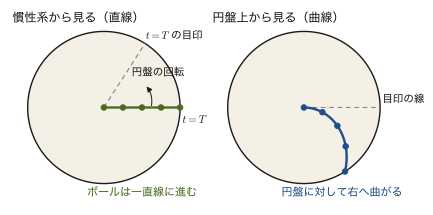
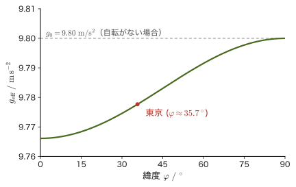

第9章運動座標系と慣性力 — 遠心力とコリオリ力
電車が急ブレーキをかけると，からだが前のめりになる．エレベーターが上昇し始める瞬間，からだが一瞬重くなったように感じる．遊園地の回転ブランコに乗ると，外側へ引っぱられるような力を感じる．
これらはすべて，自分が「加速している乗り物」に乗っているために感じる力である．ニュートンの運動の第2法則 $\bm F=m\bm a$ は，静止しているか等速直線運動をしている観測者（第2章で学んだ慣性系）にとって，そのままの形で成り立つ法則だった．加速している観測者（非慣性系）から見ると，実際には働いていない「見かけの力」を付け加えないと，運動をうまく説明できない．
この見かけの力は錯覚ではない．地球そのものが1日1回転する巨大な回転座標系であり，私たちは常にその影響を受けている．赤道に近いほど体重計の目盛りがわずかに軽くなるのも，フーコーの振り子の振動面がゆっくり回るのも，北半球の台風が反時計回りに渦を巻くのも，回転座標系に特有の見かけの力——遠心力とコリオリ力——で説明できる．
本章では，まず並進加速度系の慣性力を扱い，次に回転座標系での時間微分の公式を整えて，遠心力とコリオリ力を導く．最後に，地球の自転が引き起こす現象と，第6章の極座標の加速度との対応を見る．高校物理では「円運動する物体に乗ると遠心力が見える」と覚えた人が多いだろう．ここではそれをベクトルの式として導き，コリオリ力まで含めた一般の回転運動へ広げる．
- 非慣性系（加速している観測者）でニュートンの運動方程式を成り立たせるために導入する「慣性力」の考え方——電車・エレベーターでの体感，自由落下時の無重量状態
- 回転座標系の基底ベクトルの時間微分と，公式 $(\dd\bm Q/\dd t)_{\text{慣性}}=(\dd\bm Q/\dd t)_{\text{回転}}+\bm\omega\times\bm Q$ の導出
- 上の公式を位置ベクトルに2回適用して得られる，遠心力 $-m\bm\omega\times(\bm\omega\times\bm r)$ とコリオリ力 $-2m\bm\omega\times\bm v$ の導出と，それぞれの向き・大きさの直感的な理解（コリオリ力は「進行方向の右向き」）
- 地球の自転による身近な効果——緯度による見かけの重力加速度の違い，落下する物体の東への偏り，フーコーの振り子の周期，台風の渦の巻く向き
- 第6章で学んだ極座標の加速度の公式 $\bm a=(\ddot r-r\dot\theta^2)\bm e_r+(2\dot r\dot\theta+r\ddot\theta)\bm e_\theta$ が，実は回転座標系の一般公式の特別な場合であること
関連するノート：望月泰英『物理学ノート 力学』 p.27（見出し「運動座標系」）．
9.1 慣性系と非慣性系 — 並進加速度系の慣性力
第2章で学んだニュートンの運動の第1法則（慣性の法則）は，「外力を受けない物体は静止または等速直線運動を続ける」というものだった．この法則がそのまま成り立つ観測者（座標系）のことを慣性系（inertial frame）と呼ぶ．地面に固定した実験室は，地球の自転・公転による加速度が非常に小さいため，通常の実験の精度では慣性系とみなしてよい（自転の効果そのものは9.4節で扱う）．
ところが，電車が急ブレーキをかける瞬間，つり革につかまっている乗客は前のめりになる．エレベーターが上昇を始める瞬間，からだが一瞬重く感じられる．これらは，電車やエレベーターという「観測者（座標系）自身」が加速度をもっているために起こる現象である．電車に乗っている人から見ると，自分は静止しているのに，どこからか自分を前に押し出す力が働いたように感じる——しかし，その人を外から（地面に固定した慣性系から）見ている人には，そのような力は存在しない．電車という座標系が減速した（加速度をもった）だけである．
もっと単純な例で考えよう．なめらかな電車の床にボールを置いておく．電車が前向きに加速度 $A$ で走り出したとき，地面（慣性系）から見ると，ボールには水平方向の力がはたらかないので，ボールは静止したまま（正確には，もとの速度を保ったまま）で，床のほうが前へ走り去っていく．ところが電車の中の人には，ボールが後ろ向きに加速度 $A$ で転がっていくように見える．電車の中の人がニュートンの運動方程式 $m\times(\text{加速度})=(\text{力})$ を使い続けたいなら，「ボールに後ろ向きの力 $mA$ がはたらいた」と考えるほかない．
このように，慣性系に対して加速度をもつ座標系を非慣性系（non-inertial frame）という．非慣性系では，実在する力（万有引力・弾性力・垂直抗力・摩擦力など，何か他の物体との相互作用として説明できる力）だけでは運動方程式が合わなくなる．そこで，実在しないが，あたかも実在するかのように運動方程式に付け加えることで辻褄を合わせる仮想的な力——慣性力（inertial force，見かけの力，pseudo force）——を導入する．本節では，座標系が回転せず，並進方向にだけ加速度をもつ最も単純な場合から始める．
公式9.1 並進加速度系でのニュートンの運動方程式
慣性系 S に対して加速度 $\bm A(t)$ で並進する（回転はしない）座標系 S′ の中で，質量 $m$ の質点の位置を $\bm r'$，S′ から見た加速度を $\ddot{\bm r}'$，質点にはたらく実在する力の合力を $\bm F$ とすると，
\begin{equation} m\ddot{\bm r}'=\bm F-m\bm A \label{eq:9-translating-frame} \end{equation}が成り立つ．右辺の $-m\bm A$ が慣性力（次の定義9.1）である．実在する力に慣性力を加えたものを「合力」とみなせば，S′ の中でも $m\times(\text{S′ から見た加速度})=(\text{S′ から見た合力})$ という使い慣れた形の方程式を使い続けられる．
導出：並進加速度系での運動方程式
S の原点 O から見た S′ の原点 O′ の位置ベクトルを $\bm R(t)$，質点 P の S から見た位置ベクトルを $\bm r$，S′ から見た位置ベクトル（すなわち O′ から P までのベクトル）を $\bm r'$ とすると，
$$ \bm r=\bm R+\bm r' $$という関係がある．S′ は回転していないので，$\bm r'$ の成分（S′ に固定した座標軸で測った $x',y',z'$）をそのまま時間で微分すれば速度・加速度になる（回転する場合の微妙な違いは9.2節で扱う）．両辺を時刻 $t$（非相対論的力学では S でも S′ でも同じ時刻が流れるとする）で2回微分すると，
$$ \ddot{\bm r}=\ddot{\bm R}+\ddot{\bm r}' $$を得る．$\ddot{\bm R}\equiv\bm A(t)$ は，S から見た S′ の原点（＝電車やエレベーターそのもの）の加速度である．質点 P には実在する力 $\bm F$（重力・垂直抗力など，何らかの相互作用として説明できる力の合計）が働いているとすると，S（慣性系）でのニュートンの運動方程式は $m\ddot{\bm r}=\bm F$ だから，
$$ m(\bm A+\ddot{\bm r}')=\bm F \qquad\therefore\quad m\ddot{\bm r}'=\bm F-m\bm A $$となる．左辺の $m\ddot{\bm r}'$ は，S′ に乗っている観測者が測る質点の加速度に質量をかけたものである．つまり，S′ の観測者から見ると，実在する力 $\bm F$ に，$-m\bm A$ という余分な項を足したものが「見かけの合力」になっている．
（導出終わり）
定義9.1 慣性力
慣性系に対して加速度 $\bm A(t)$ で並進運動する座標系（回転はしないとする）で運動方程式を成り立たせるために付け加える，実在しない見かけの力
\begin{equation} \bm F_{\text{慣性}}=-m\bm A \label{eq:9-inertial-force-def} \end{equation}を慣性力（inertial force）という．慣性力は，座標系の加速度 $\bm A$ と逆向きにはたらき，大きさは質量に比例する．単位は $\mathrm{kg\cdot m/s^2}=\mathrm{N}$ で，ふつうの力と同じである．
イメージ：慣性力の向きは座標系の加速度と逆
慣性力 $-m\bm A$ の符号を体感的に理解するには，「座標系が加速した向きと反対向きに，自分は取り残されるように感じる」と考えるとよい．電車が前向きに加速すると，乗客は後ろに押しつけられるように感じる（加速度は前向き，慣性力は後ろ向き）．エレベーターが上向きに加速すると，からだは下向きに押しつけられるように感じ，体重計の目盛りは重力 $mg$ より大きい $N=m(g+A)$ を示す．逆にエレベーターのワイヤが切れて自由落下すると，$\bm A=-g\bm e_z$（下向きに大きさ $g$）となり，慣性力は $-m\bm A=mg\bm e_z$（上向きに大きさ $mg$）——ちょうど重力を打ち消す向きにはたらくので，体重計は $N=0$ を示す．これが無重量状態（weightlessness）である．
考察：慣性力の性質と，重力との区別のつかなさ
慣性力には，ふつうの力と違う3つの性質がある．(1) 質量 $m$ に比例する．(2) 反作用の相手がない（どの物体が押しているのかを指させない）．(3) 慣性系から見れば存在しない．
とくに(1)は重要である．重力 $m\bm g$ も質量に比例するので，窓のない宇宙船の中で，物体が「下向きに $g$ の加速度で落ちる」のを見ても，(a) 星の上で重力 $\bm g$ を受けている，(b) 重力のない空間で宇宙船が上向きに加速度 $g$ で加速している（慣性力 $-m\bm A$ が下向きにはたらく），のどちらなのかを実験で区別する方法はない（アインシュタインのエレベーター）．重力の式に出てくる質量（重力質量）と，運動方程式 $m\bm a=\bm F$ に出てくる質量（慣性質量）が等しいという事実が，この区別のつかなさの根拠である．この考えは一般相対性理論（等価原理）の出発点になるが，本書では扱わない．
応用：宇宙飛行士はなぜ「無重量」なのか
国際宇宙ステーション（ISS）の高度（地表から約400 km）でも，重力加速度は約 $8.7\ \mathrm{m/s^2}$（地表の約89%）もあり，「重力がないから」宇宙飛行士が浮いているのではない．ISS は地球のまわりを円軌道で周回しており，その向心加速度がその高度の重力加速度そのものになっている——つまり ISS（とその中の飛行士）は，重力だけを受けて自由落下し続けている状態にある．ISS は水平に約 $7.7\ \mathrm{km/s}$ の速さで進みながら落ち続けており，落ちていく曲線がちょうど地球の丸みと一致するので，地面にぶつからずに周回を続ける．自由落下するエレベーターと同じ理屈で，ISS に固定した非慣性系から見ると，重力を打ち消す慣性力がはたらき，見かけの重さが0になる．これが「無重量状態」の正しい意味であり，宇宙空間だから重力が働かないのではない．
例題9.1 加速するエレベーター内の見かけの体重
質量 $m=60\ \mathrm{kg}$ の人が乗ったエレベーターが，上向きに加速度 $A=2.0\ \mathrm{m/s^2}$ で加速しているとき，エレベーターの床（体重計）が人に及ぼす垂直抗力 $N$ を求めよ．また，エレベーターのワイヤが切れて自由落下した場合（$A=-g$）の $N$ を求めよ．重力加速度は $g=9.8\ \mathrm{m/s^2}$ とする．
解答 図9.1のように，エレベーターに固定した非慣性系で考えると，人には重力 $mg$（下向き），垂直抗力 $N$（上向き），慣性力 $-mA$（下向き，大きさ $mA$）の3つがはたらき，人はエレベーターに対して静止しているのでこれらはつり合う：
$$ N-mg-mA=0 \qquad\therefore\quad N=m(g+A) $$数値を代入すると，
$$ N=60\times(9.8+2.0)=60\times11.8=708\ \mathrm{N} $$である（静止しているときの体重 $mg=60\times9.8=588\ \mathrm{N}$ より大きく，加速し始めた瞬間に「重くなった」と感じることに対応する．単位は $\mathrm{kg\cdot m/s^2}=\mathrm{N}$）．自由落下では $A=-g$ を代入すると，
$$ N=m(g+(-g))=0\ \mathrm{N} $$となり，無重量状態になる．
9.2 回転座標系での時間微分
9.1節では，座標系が並進運動するだけの単純な場合を扱った．次に考えたいのは，回転する座標系——たとえば回転する円盤の上に立っている観測者や，地球そのもの（1日1回転している）——である．そのためにまず，同じ運動が回転する観測者にはどう見えるかを具体例で確かめておこう．
水平な円盤が，一定の角速度 $\omega$ で反時計回りに回っている．この円盤の中心から縁に向かって，ボールを一定の速さ $v$ で転がす．地面（慣性系）から見ると，ボールは力を受けないので，当然まっすぐな線上を進む．ところが，円盤の上に固定した座標系（円盤の上に立っている人）から見ると，ボールが進んでいる間に円盤そのものが回ってしまうので，ボールは曲がった軌跡を描いて進むように見える（図9.2）．

同じ運動が，観測者しだいで直線に見えたり曲線に見えたりする．したがって，ボールの速度や加速度も，どちらの観測者が測るかで値が違う．とくに，円盤に固定された棒の先端のように，円盤の上で静止している点でも，慣性系から見れば円運動をしていて，速度をもつ．つまり，ベクトル量の時間変化には「慣性系から見た変化」と「回転する座標系から見た変化」の2種類があり，その違いをきちんと式にしておく必要がある．そのためにまず，回転する座標系に固定した基底ベクトルを時間で微分するとどうなるか，という数学の道具を用意する．
注意：$\bm\omega$ の記法について
本章では，角速度を大きさと向き（回転軸の向き，右ねじの法則で決める）をもつベクトル $\bm\omega$ として扱う．これは第7章で単振動の角振動数として使ったスカラー $\omega$（例えば $\omega=\sqrt{k/m}$）とは別の量なので混同しないよう注意してほしい．$\bm\omega$ の大きさ $\omega=\abs{\bm\omega}$ は「1秒あたり何ラジアン回転するか」という角速度の大きさを表し，向きは回転軸に沿い，その軸の正の向きから見て反時計回りに回転しているとき $\bm\omega$ はその正の向きを指す（右ねじの法則．大学数学 第15章 15.3節で外積の向きを決めたのと同じ規則である）．また，$\varphi$ は9.4節で緯度に使うので，本節の回転角には $\psi$ を使う．
慣性系 S に固定した正規直交基底（互いに直交し，長さが1のベクトルの組）を $\bm e_x,\bm e_y,\bm e_z$ とし，S に対して角速度ベクトル $\bm\omega(t)$ で回転している座標系 S′ に固定した正規直交基底を $\bm e_x',\bm e_y',\bm e_z'$ とする．どちらも右手系，すなわち $\bm e_x\times\bm e_y=\bm e_z$（右ねじの向き）を満たすとする．S′ の基底ベクトルは，長さが常に1で，互いの角度も常に直角のまま，全体が「剛体のように」向きだけを変えていく．
定理9.1 回転座標系での時間微分の関係式
慣性系 S に対して角速度ベクトル $\bm\omega(t)$ で回転する座標系 S′ を考える．任意のベクトル $\bm Q(t)$（位置でも速度でも力でも，どんなベクトル量でもよい）について，S から見た時間微分（慣性系微分）と，S′ に乗った観測者から見た時間微分（回転系微分，成分だけの微分）の間には，
\begin{equation} \left(\diff{\bm Q}{t}\right)_{\text{慣性}}=\left(\diff{\bm Q}{t}\right)_{\text{回転}}+\bm\omega\times\bm Q \label{eq:9-rotating-derivative} \end{equation}という関係が成り立つ．右辺第2項 $\bm\omega\times\bm Q$ は，$\bm Q$ 自体は回転座標系の中で変化していなくても（$(\dd\bm Q/\dd t)_{\text{回転}}=\bm 0$ でも），座標系そのものが回転しているために慣性系から見ると $\bm Q$ の向きが変わって見える効果を表す．たとえば円盤に固定した棒の先端の位置ベクトル $\bm Q=\bm r$ なら，慣性系から見た速度は $\bm\omega\times\bm r$（大きさ $\omega\rho$，$\rho$ は回転軸からの距離）である．
ここで「回転座標系から見た時間微分」とは，S′ に乗った観測者が，$\bm Q$ を S′ の基底で成分表示 $\bm Q=Q_x'\bm e_x'+Q_y'\bm e_y'+Q_z'\bm e_z'$ したときに，各成分 $Q_i'(t)$ だけを時間微分したもの（S′ の観測者にとっては $\bm e_i'$ は自分の座標軸そのものであり，向きが変わっているようには感じられない）を指す．定理9.1を導くには，基底ベクトルそのものの時間微分が必要になる．
導出（その1）：回転する基底ベクトルの時間微分 $\dd\bm e_i'/\dd t=\bm\omega\times\bm e_i'$
まず，回転軸が $z$ 軸（$\bm\omega=\omega\bm e_z$，$\omega=\dot\psi$ は回転角 $\psi(t)$ の時間微分）に一致する具体的な場合を考える．このとき，S′ の基底ベクトルは
$$ \bm e_x'(t)=\cos\psi\,\bm e_x+\sin\psi\,\bm e_y,\qquad \bm e_y'(t)=-\sin\psi\,\bm e_x+\cos\psi\,\bm e_y,\qquad \bm e_z'=\bm e_z $$と書ける（これは第3章・第6章で極座標の基底ベクトル $\bm e_r,\bm e_\theta$ を直交座標の基底で表したときと，$\psi\leftrightarrow\theta$ の読み替えでまったく同じ式である）．時間で微分すると，
$$ \dot{\bm e}_x'=\dot\psi(-\sin\psi\,\bm e_x+\cos\psi\,\bm e_y)=\dot\psi\,\bm e_y'=\omega\,\bm e_y' $$ $$ \dot{\bm e}_y'=\dot\psi(-\cos\psi\,\bm e_x-\sin\psi\,\bm e_y)=-\dot\psi\,\bm e_x'=-\omega\,\bm e_x' $$となる（図9.3）．一方，$\bm\omega=\omega\bm e_z$ と各基底ベクトルの外積を計算すると（$\bm e_z\times\bm e_x'=\bm e_y'$，$\bm e_z\times\bm e_y'=-\bm e_x'$，$\bm e_z\times\bm e_z'=\bm 0$ は，$\bm e_x',\bm e_y',\bm e_z'$ も $\bm e_x,\bm e_y,\bm e_z$ と同じ右手系の正規直交基底であることから成り立つ），
$$ \bm\omega\times\bm e_x'=\omega\,\bm e_y',\qquad \bm\omega\times\bm e_y'=-\omega\,\bm e_x',\qquad \bm\omega\times\bm e_z'=\bm 0=\dot{\bm e}_z' $$となり，3本の基底ベクトルすべてについて $\dot{\bm e}_i'=\bm\omega\times\bm e_i'$ が成り立つことが確かめられた．
次に，回転軸の向きが時間とともに変わってもよい一般の場合を考える．このときも，各時刻に「瞬間の角速度ベクトル」$\bm\omega(t)$ が存在して同じ式が成り立つことを示そう．基底を $\bm e_1',\bm e_2',\bm e_3'$（$=\bm e_x',\bm e_y',\bm e_z'$）と書く．基底の直交性・長さ1という条件 $\bm e_i'\cdot\bm e_j'=\delta_{ij}$（$i=j$ なら1，$i\neq j$ なら0）を時間で微分すると，
$$ \dot{\bm e}_i'\cdot\bm e_j'+\bm e_i'\cdot\dot{\bm e}_j'=0 $$となる．そこで $\Omega_{ij}\equiv\dot{\bm e}_i'\cdot\bm e_j'$ とおくと，上の式は $\Omega_{ij}+\Omega_{ji}=0$，すなわち $\Omega_{ji}=-\Omega_{ij}$ である（とくに $i=j$ なら $\Omega_{ii}=0$）．$\dot{\bm e}_i'$ を基底 $\bm e_j'$ で展開したときの係数が $\Omega_{ij}$ なので，独立な成分は $\Omega_{12},\Omega_{23},\Omega_{31}$ の3つだけであり，$\omega_3\equiv\Omega_{12},\ \omega_1\equiv\Omega_{23},\ \omega_2\equiv\Omega_{31}$ とおくと，
$$ \dot{\bm e}_1'=\omega_3\bm e_2'-\omega_2\bm e_3',\qquad \dot{\bm e}_2'=-\omega_3\bm e_1'+\omega_1\bm e_3',\qquad \dot{\bm e}_3'=\omega_2\bm e_1'-\omega_1\bm e_2' $$と書ける．一方，$\bm\omega\equiv\omega_1\bm e_1'+\omega_2\bm e_2'+\omega_3\bm e_3'$ と各基底ベクトルの外積を，$\bm e_1'\times\bm e_2'=\bm e_3'$ などの関係から計算すると，$\bm\omega\times\bm e_1'=\omega_2\bm e_2'\times\bm e_1'+\omega_3\bm e_3'\times\bm e_1'=-\omega_2\bm e_3'+\omega_3\bm e_2'$，同様に $\bm\omega\times\bm e_2'=\omega_1\bm e_3'-\omega_3\bm e_1'$，$\bm\omega\times\bm e_3'=\omega_2\bm e_1'-\omega_1\bm e_2'$ となり，上の3式とちょうど一致する．したがって，一般に
\begin{equation} \diff{\bm e_i'}{t}=\bm\omega\times\bm e_i' \qquad(i=x,y,z) \label{eq:9-basis-derivative} \end{equation}が成り立つ．この $\bm\omega$ が S′ の瞬間の角速度ベクトルである．実際，$\bm\omega$ に平行なベクトルは $\bm\omega\times\bm\omega=\bm 0$ より，その瞬間には向きを変えない．つまり $\bm\omega$ の向きが瞬間の回転軸であり，大きさが単位時間あたりの回転角である．軸が $z$ 軸に固定されている先ほどの場合は，$\bm\omega=\omega\bm e_z$ にほかならない．
（導出終わり）
数学の道具：外積の復習
式 \eqref{eq:9-basis-derivative} の右辺に現れる外積 $\bm\omega\times\bm e_i'$ の定義・成分表示・幾何学的な意味（大きさが平行四辺形の面積，向きが右ねじの法則で決まること）は大学数学 第15章 15.3–15.4節を参照．本章では，外積を「回転」を表す道具として使う——大きさ $\abs{\bm\omega}\abs{\bm e_i'}\sin90^\circ=\omega$（$\bm\omega\perp\bm e_i'$ のとき）は角速度そのものであり，向きは基底ベクトルが実際に動いていく向きと一致する．
導出（その2）：定理9.1の証明
ベクトル $\bm Q(t)$ を S′ の基底で成分表示する：
$$ \bm Q(t)=Q_x'(t)\,\bm e_x'(t)+Q_y'(t)\,\bm e_y'(t)+Q_z'(t)\,\bm e_z'(t) $$慣性系 S から見た時間微分（積の微分法則をそのまま適用する）は，
$$ \left(\diff{\bm Q}{t}\right)_{\text{慣性}} =\underbrace{\dot Q_x'\bm e_x'+\dot Q_y'\bm e_y'+\dot Q_z'\bm e_z'}_{\text{(i)}} +\underbrace{Q_x'\dot{\bm e}_x'+Q_y'\dot{\bm e}_y'+Q_z'\dot{\bm e}_z'}_{\text{(ii)}} $$である．項(i)は，成分 $Q_i'(t)$ だけを時間微分して同じ基底 $\bm e_i'$ に掛け戻したものであり，これはまさに「S′ に乗った観測者が測る $\bm Q$ の時間変化率」，すなわち回転座標系から見た時間微分 $(\dd\bm Q/\dd t)_{\text{回転}}$ にほかならない．項(ii)は，式 \eqref{eq:9-basis-derivative} の $\dot{\bm e}_i'=\bm\omega\times\bm e_i'$ を代入すると，
$$ \text{(ii)}=Q_x'(\bm\omega\times\bm e_x')+Q_y'(\bm\omega\times\bm e_y')+Q_z'(\bm\omega\times\bm e_z') =\bm\omega\times(Q_x'\bm e_x'+Q_y'\bm e_y'+Q_z'\bm e_z')=\bm\omega\times\bm Q $$となる（外積の分配法則——$\bm\omega\times(\ )$ が線形な演算であること——を使った）．以上をまとめると，式 \eqref{eq:9-rotating-derivative}（定理9.1）が任意のベクトル $\bm Q(t)$ について成り立つ．
（証明終わり）
例題9.2 回転座標系の中で伸びる棒の先端の速度
$z$ 軸のまわりを角速度 $\omega=3.0\ \mathrm{rad/s}$（一定，反時計回り）で回転する座標系 S′ の $x'$ 軸に沿って，長さ $l(t)=1.0+0.2t\ [\mathrm m]$（$t$ は秒）で伸びていく棒がある．棒の先端を指すベクトルを $\bm Q=l(t)\,\bm e_x'$ とする．$t=0.5\ \mathrm s$ における，(a) 回転座標系から見た $\dd\bm Q/\dd t$，(b) $\bm\omega\times\bm Q$，(c) 慣性系から見た先端の速度とその速さを，定理9.1を使って求めよ．さらに (d) 成分で直接微分して結果を確かめよ．
解答 $t=0.5\ \mathrm s$ のとき $l=1.0+0.2\times0.5=1.1\ \mathrm m$．
(a) S′ の観測者にとっては，基底 $\bm e_x'$ は動かず，成分 $Q_x'=l(t)$ だけが変化するので，
$$ \left(\diff{\bm Q}{t}\right)_{\text{回転}}=\dot l\,\bm e_x'=0.2\,\bm e_x'\ \mathrm{m/s} $$(b) $\bm\omega=3.0\,\bm e_z$ で，$\bm e_z\times\bm e_x'=\bm e_y'$ だから，
$$ \bm\omega\times\bm Q=3.0\times1.1\,(\bm e_z\times\bm e_x')=3.3\,\bm e_y'\ \mathrm{m/s} $$(c) 定理9.1（式 \eqref{eq:9-rotating-derivative}）より，慣性系から見た先端の速度は
$$ \left(\diff{\bm Q}{t}\right)_{\text{慣性}}=0.2\,\bm e_x'+3.3\,\bm e_y'\ \mathrm{m/s} $$で，速さは $\sqrt{0.2^2+3.3^2}=\sqrt{10.93}\approx3.31\ \mathrm{m/s}$ である（単位：$\dot l$ は $\mathrm{m/s}$，$\omega l$ は $\mathrm{rad/s}\times\mathrm m=\mathrm{m/s}$．rad は無次元）．
(d) 直接微分で確かめる．$\bm Q=l(t)(\cos\omega t,\ \sin\omega t,\ 0)$（$\bm e_x,\bm e_y,\bm e_z$ の成分）だから，積の微分法則より
$$ \diff{\bm Q}{t}=\dot l\,(\cos\omega t,\ \sin\omega t,\ 0)+l\omega\,(-\sin\omega t,\ \cos\omega t,\ 0) $$$t=0.5\ \mathrm s$ で $\omega t=1.5\ \mathrm{rad}$，$\cos1.5\approx0.0707$，$\sin1.5\approx0.9975$ を代入すると，
$$ 0.2\,(0.0707,\ 0.9975,\ 0)+3.3\,(-0.9975,\ 0.0707,\ 0)\approx(-3.278,\ 0.433,\ 0)\ \mathrm{m/s} $$となる．一方，(c)の結果 $0.2\,\bm e_x'+3.3\,\bm e_y'$ を $\bm e_x'=(\cos1.5,\sin1.5,0)$，$\bm e_y'=(-\sin1.5,\cos1.5,0)$ で成分表示しても同じ値になり，速さ $\sqrt{3.278^2+0.433^2}\approx3.31\ \mathrm{m/s}$ も一致する．第1項が「棒が伸びる」効果（回転座標系から見た変化），第2項が「座標系が回転する」効果（$\bm\omega\times\bm Q$）に対応している．
9.3 遠心力とコリオリ力
定理9.1（式 \eqref{eq:9-rotating-derivative}）を，質点の位置ベクトルに繰り返し適用すると，回転座標系での運動方程式——実在する力に加えて，回転に特有の2種類の見かけの力，遠心力とコリオリ力が現れる式——が得られる．導出に入る前に，これらがどこから来るのかを，図9.2の円盤の例で見当をつけておこう．
イメージ：円盤の上を外向きに進む物体の，慣性系での加速度
反時計回りに角速度 $\omega$ で回る円盤の上で，中心から見て距離 $r$ の点は，慣性系から見ると円盤とともに接線方向へ速さ $\omega r$ で動いている（定理9.1の後半で述べた $\bm\omega\times\bm r$ である）．この点を通って，物体が円盤に対して外向きに速さ $v$ で進んでいるとする．微小時間 $\Delta t$ の間に，慣性系での速度は次の2つの理由で接線方向に変化する．
(ア) 物体が外側の点へ移る．距離が $r$ から $r+v\Delta t$ になると，その場所の円盤の周速は $\omega r$ から $\omega(r+v\Delta t)$ に増えるので，接線方向の速度が $\omega v\,\Delta t$ だけ増す．(イ) 外向きの速度 $v$ の「向き」が，円盤の回転にともなって $\omega\Delta t$ だけ回る．長さ $v$ のベクトルが小さな角 $\omega\Delta t$ だけ回れば，接線方向に $v\omega\Delta t$ の変化が生じる．
あわせて，慣性系での接線方向の加速度は $\omega v+\omega v=2\omega v$ となる．円盤の上の観測者は，物体が外向きにまっすぐ進んでいるつもりなのに，慣性系では加速度 $2\omega v$（反時計回り向き）が生じている．このずれを補って運動方程式を書くには，反時計回りと反対向き（進行方向の右向き）に大きさ $2m\omega v$ の力を付け加えなければならない．この「2」が，あとで出てくるコリオリ力 $-2m\bm\omega\times\bm v$ の係数の由来である．また，円盤に対して静止している点は慣性系では半径 $r$ の等速円運動をするので，中心向きに大きさ $\omega^2 r$ の加速度をもつ．これを補うのが，外向きの遠心力 $m\omega^2 r$ である．
導出：回転座標系での加速度と運動方程式
9.1節と同じく，慣性系 S の原点 O に対して S′ の原点 O′ が位置ベクトル $\bm R(t)$（速度 $\bm V=\dot{\bm R}$，加速度 $\bm A=\ddot{\bm R}$）で並進運動し，さらに S′ が S に対して角速度ベクトル $\bm\omega(t)$ で回転しているとする．質点 P の O′ から見た位置ベクトルを $\bm r'$ とすると，S から見た P の位置ベクトルは $\bm r=\bm R+\bm r'$ である．S′ に乗った観測者が測る P の相対速度・相対加速度を，
$$ \bm v_{\text{相対}}\equiv\left(\diff{\bm r'}{t}\right)_{\text{回転}},\qquad \bm a_{\text{相対}}\equiv\left(\diff{\bm v_{\text{相対}}}{t}\right)_{\text{回転}} $$と定義する（S′ に固定した座標軸で測った，ふつうの意味での速度・加速度）．まず，$\bm r'$ に定理9.1（式 \eqref{eq:9-rotating-derivative}）を適用すると，S から見た $\bm r'$ の時間微分は，
$$ \left(\diff{\bm r'}{t}\right)_{\text{慣性}}=\bm v_{\text{相対}}+\bm\omega\times\bm r' $$である．したがって，S から見た P の速度は，
\begin{equation} \bm v=\dot{\bm r}=\bm V+\bm v_{\text{相対}}+\bm\omega\times\bm r' \label{eq:9-velocity-composition} \end{equation}となる．次に，この式全体をもう一度 S から見て時間微分する．右辺の各項について，通常の積の微分法則（フレームによらず成り立つ）を使うと，
$$ \dot{\bm v}=\dot{\bm V}+\left(\diff{\bm v_{\text{相対}}}{t}\right)_{\text{慣性}}+\left(\diff{\bm\omega}{t}\right)_{\text{慣性}}\times\bm r'+\bm\omega\times\left(\diff{\bm r'}{t}\right)_{\text{慣性}} $$ここで，$\dot{\bm V}=\bm A$，$\left(\dd\bm\omega/\dd t\right)_{\text{慣性}}=\left(\dd\bm\omega/\dd t\right)_{\text{回転}}+\bm\omega\times\bm\omega=\dot{\bm\omega}$（$\bm\omega\times\bm\omega=\bm 0$ なので，$\bm\omega$ 自身の時間微分はどちらの系で見ても同じ．これを $\dot{\bm\omega}$ と書く），そして $\bm v_{\text{相対}}$ に定理9.1を適用すると $\left(\dd\bm v_{\text{相対}}/\dd t\right)_{\text{慣性}}=\bm a_{\text{相対}}+\bm\omega\times\bm v_{\text{相対}}$，さらに上の途中式より $\left(\dd\bm r'/\dd t\right)_{\text{慣性}}=\bm v_{\text{相対}}+\bm\omega\times\bm r'$ である．これらをすべて代入すると，
$$ \bm a=\bm A+\left(\bm a_{\text{相対}}+\bm\omega\times\bm v_{\text{相対}}\right)+\dot{\bm\omega}\times\bm r'+\bm\omega\times\left(\bm v_{\text{相対}}+\bm\omega\times\bm r'\right) $$となり，$\bm\omega\times\bm v_{\text{相対}}$ の項が2回現れることに注意して整理すると，
\begin{equation} \bm a=\bm A+\bm a_{\text{相対}}+2\,\bm\omega\times\bm v_{\text{相対}}+\bm\omega\times(\bm\omega\times\bm r')+\dot{\bm\omega}\times\bm r' \label{eq:9-general-accel} \end{equation}が得られる．ニュートンの運動方程式 $m\bm a=\bm F$（$\bm F$ は実在する力の合計）に式 \eqref{eq:9-general-accel} を代入し，$\bm a_{\text{相対}}$（＝S′ に乗った観測者が実際に測る加速度）について解くと，
\begin{equation} m\bm a_{\text{相対}}=\bm F\ \underbrace{-\,m\bm A}_{\text{並進の慣性力}}\ \underbrace{-\,2m\,\bm\omega\times\bm v_{\text{相対}}}_{\text{コリオリ力}}\ \underbrace{-\,m\bm\omega\times(\bm\omega\times\bm r')}_{\text{遠心力}}\ \underbrace{-\,m\dot{\bm\omega}\times\bm r'}_{\text{オイラー力}} \label{eq:9-rotating-eom} \end{equation}となる．9.1節の並進の慣性力 $-m\bm A$ に加えて，回転に特有の3つの見かけの力が現れた．
式 \eqref{eq:9-general-accel} の $2\,\bm\omega\times\bm v_{\text{相対}}$ の「2」は，上の「イメージ」の(ア)と(イ)に対応している．1つ目は，$\bm v_{\text{相対}}$ 自身が座標系の回転で向きを変える効果（定理9.1を $\bm v_{\text{相対}}$ に適用したときに出る項．(イ)に当たる）．2つ目は，位置 $\bm r'$ が回転で運ばれて速度 $\bm\omega\times\bm r'$ をもち，その $\bm r'$ が $\bm v_{\text{相対}}$ の分だけ変わることで，$\bm\omega\times(\dd\bm r'/\dd t)$ の中に現れる効果（(ア)に当たる）．この2つがまったく同じ大きさなので，合わせて2倍になる．次の9.5節で，極座標の加速度の $2\dot r\dot\theta$ の項として，これがもう一度現れる．
（導出終わり）
注意：オイラー力について
式 \eqref{eq:9-rotating-eom} の最後の項 $-m\dot{\bm\omega}\times\bm r'$ はオイラー力（Euler force）と呼ばれ，座標系の回転の速さそのものが変化している（$\dot{\bm\omega}\neq\bm 0$，たとえば回転木馬が加速・減速している）ときに現れる．地球の自転角速度はきわめて高い精度で一定（$\dot{\bm\omega}\approx\bm 0$）なので，本章では以下，$\bm\omega$ が一定で，かつ座標系の原点が並進運動しない（$\bm A=\bm 0$）場合，すなわち純粋な回転座標系だけを扱い，遠心力とコリオリ力に注目する．並進の慣性力とオイラー力を考えたい場合は，式 \eqref{eq:9-rotating-eom} にそのまま戻ればよい．
以下，原点を共有する純粋な回転座標系（$\bm A=\bm 0,\ \dot{\bm\omega}=\bm 0$）に限って考える．このとき式 \eqref{eq:9-rotating-eom} は，$\bm r'$ を単に $\bm r$（回転座標系の原点から見た位置ベクトル）と書いて，
\begin{equation} m\bm a_{\text{相対}}=\bm F-2m\,\bm\omega\times\bm v_{\text{相対}}-m\bm\omega\times(\bm\omega\times\bm r) \label{eq:9-rotating-eom-simple} \end{equation}となる．
定義9.2 遠心力とコリオリ力
角速度ベクトル $\bm\omega$（一定）で回転する座標系の中で質点（回転座標系の原点から見た位置 $\bm r$，回転座標系から見た速度 $\bm v_{\text{相対}}$）に付け加える，回転に特有の2種類の慣性力：
\begin{equation} \bm F_{\text{遠心}}=-m\,\bm\omega\times(\bm\omega\times\bm r) \label{eq:9-centrifugal-def} \end{equation} \begin{equation} \bm F_{\text{Co}}=-2m\,\bm\omega\times\bm v_{\text{相対}} \label{eq:9-coriolis-def} \end{equation}をそれぞれ遠心力（centrifugal force）・コリオリ力（Coriolis force）と呼ぶ．遠心力は質点が回転座標系に対して静止していても（$\bm v_{\text{相対}}=\bm 0$ でも）はたらくのに対し，コリオリ力は質点が回転座標系に対して動いているとき（$\bm v_{\text{相対}}\neq\bm 0$）だけはたらく，という違いに注意する．単位は，遠心力が $\mathrm{kg\cdot(rad/s)^2\cdot m}=\mathrm{kg\cdot m/s^2}=\mathrm N$（rad は無次元），コリオリ力が $\mathrm{kg\cdot(rad/s)\cdot(m/s)}=\mathrm{kg\cdot m/s^2}=\mathrm N$ で，どちらもふつうの力と同じである．
導出：遠心力の向きと大きさ
式 \eqref{eq:9-centrifugal-def} の向きと大きさを具体的に求めよう．計算がいちばん簡単になるように，その瞬間だけ座標軸を選び直して $\bm\omega=\omega\bm e_z$（$z$ 軸を回転軸に一致させる）とし，質点の位置を $\bm r=(x,y,z)$ とする．まず，
$$ \bm\omega\times\bm r=\omega\bm e_z\times(x\bm e_x+y\bm e_y+z\bm e_z)=\omega(x\,\bm e_z\times\bm e_x+y\,\bm e_z\times\bm e_y)=\omega(x\bm e_y-y\bm e_x) $$（$\bm e_z\times\bm e_x=\bm e_y$，$\bm e_z\times\bm e_y=-\bm e_x$，$\bm e_z\times\bm e_z=\bm 0$ を使った）．もう一度 $\bm\omega=\omega\bm e_z$ との外積をとると，
$$ \bm\omega\times(\bm\omega\times\bm r)=\omega\bm e_z\times\omega(x\bm e_y-y\bm e_x)=\omega^2(x\,\bm e_z\times\bm e_y-y\,\bm e_z\times\bm e_x)=\omega^2(-x\bm e_x-y\bm e_y)=-\omega^2\bm\rho $$となる．ここで $\bm\rho\equiv x\bm e_x+y\bm e_y$ は，$\bm r$ を回転軸（$z$ 軸）に垂直な平面へ正射影したベクトル，すなわち「回転軸から質点までの，軸に垂直な向きのベクトル」である（大きさ $\rho=\sqrt{x^2+y^2}$ は回転軸からの距離．なお，この $\rho$ は第3章の曲率半径 $\rho$ とは別のもので，本章では回転軸からの距離だけを表す）．したがって，
\begin{equation} \bm F_{\text{遠心}}=-m\bm\omega\times(\bm\omega\times\bm r)=m\omega^2\bm\rho \label{eq:9-centrifugal-result} \end{equation}となり，遠心力は，大きさ $m\omega^2\rho$（$\rho$ は回転軸からの距離）で，向きは回転軸から質点へ向かう向き（軸から外向き）であることがわかる．第5章で等速円運動の向心力の大きさが $m\omega^2r$（$r$ は回転半径）だったことを思い出すと，遠心力はちょうどその向心力と大きさが等しく向きが逆——回転座標系に乗って一緒に等速円運動している観測者から見れば，実在する向心力（糸の張力など）と遠心力がつり合って質点が静止して見える，という辻褄合わせになっていることがわかる．
（導出終わり）
注意：遠心力は向心力の反作用ではない
「遠心力は向心力の反作用だ」という説明を耳にするが，これは誤りである．糸で結んだ石を振り回す場合で整理しよう．(1) 向心力（糸の張力）は，糸が石を中心へ引く力である．その反作用は，石が糸を外向きに引く力であり，これは糸にはたらく力である．(2) 遠心力は，回転座標系に乗った観測者が，石そのものにはたらくと考える見かけの力であり，反作用の相手となる物体がない．(3) 回転座標系（石とともに回る観測者）から見ると，石には向心力（張力，内向き）と遠心力（外向き）の2つがはたらいてつり合い，石は静止して見える．慣性系から見ると，遠心力は存在せず，石には向心力だけがはたらいて円運動をしている．作用・反作用は「別々の物体にはたらく同じ大きさの力の組」であり，同じ物体にはたらいてつり合う力の組ではない．
定理9.2 コリオリ力は進行方向の右向き
観測者の側を向く角速度ベクトル $\bm\omega$（すなわち，観測者から見て反時計回りの回転）をもつ座標系の中で，$\bm\omega$ に垂直な面内を速度 $\bm v_{\text{相対}}$ で動く質点には，速度に垂直で，進行方向に向かって右向きに，大きさ $2m\omega v_{\text{相対}}$ のコリオリ力がはたらく．回転が逆（観測者から見て時計回り）なら，力は進行方向の左向きである．
証明：定理9.2
観測者を $+z$ 側（上）に置き，$\bm\omega=\omega\bm e_z$（$\omega\gt0$）とする．$\bm\omega$ に垂直な面内の速度を $\bm v_{\text{相対}}=(v_x,v_y,0)$ とすると，$\bm e_z\times\bm e_x=\bm e_y$，$\bm e_z\times\bm e_y=-\bm e_x$ より，
$$ \bm\omega\times\bm v_{\text{相対}}=\omega(v_x\,\bm e_z\times\bm e_x+v_y\,\bm e_z\times\bm e_y)=\omega(-v_y,\ v_x,\ 0) $$したがって，式 \eqref{eq:9-coriolis-def} のコリオリ力は
\begin{equation} \bm F_{\text{Co}}=-2m\,\bm\omega\times\bm v_{\text{相対}}=2m\omega\,(v_y,\ -v_x,\ 0) \label{eq:9-coriolis-plane} \end{equation}である．大きさは $2m\omega\sqrt{v_x^2+v_y^2}=2m\omega v_{\text{相対}}$．また $(v_x,v_y)\cdot(v_y,-v_x)=0$ なので $\bm F_{\text{Co}}\perp\bm v_{\text{相対}}$ である．向きについては，$(v_x,v_y)\mapsto(v_y,-v_x)$ が「反時計回りを正とする座標平面上で，ベクトルを時計回りに $90^\circ$ 回す」操作であることを確かめればよい．たとえば東向き（$+x$ 向き）$(1,0)$ は $(0,-1)$（南向き）に，北向き $(0,1)$ は $(1,0)$（東向き）に，西向き $(-1,0)$ は $(0,1)$（北向き）に，南向き $(0,-1)$ は $(-1,0)$（西向き）に移る（図9.5）．どれも進行方向を向いて右手側である．$\omega\lt0$（時計回り）なら式 \eqref{eq:9-coriolis-plane} の符号が反転するので，力は左向きになる．
（証明終わり）
イメージ：コリオリ力は仕事をしない
コリオリ力 $\bm F_{\text{Co}}=-2m\bm\omega\times\bm v_{\text{相対}}$ は，外積の定義から常に $\bm v_{\text{相対}}$ に垂直な向きを向く．力が常に速度に垂直だと，仕事 $W=\int\bm F_{\text{Co}}\cdot\dd\bm r$（第4章）は常に0になる——コリオリ力は，質点の運動エネルギーを変えることはなく，もっぱら向きだけを変える力である．等速円運動の向心力（第5章）が速さを変えずに向きだけを変える力だったのと同じ性質であり，実際コリオリ力は回転座標系の中で見た運動の向きを次々に曲げていく——これが，あとで見る台風の渦や，回転する円盤の上をまっすぐ歩こうとしても曲がってしまう現象（図9.2）の正体である．
応用：遠心分離機
遠心分離機（遠心力を利用して密度の異なる成分を分離する装置）は，試料を高速で回転させることで，重力よりもはるかに大きい「見かけの重力」（遠心力 $m\omega^2\rho$）を作り出す．回転半径 $\rho$ が数 cm 程度でも，回転数を毎分数千〜数万回転にすると，$\omega^2\rho$ は地上の重力加速度 $g$ の数千〜数十万倍にも達する（この比を相対遠心加速度という）．密度の大きい成分ほど強く外側へ押しやられるので，血液検査での血球分離や，DNA・タンパク質の精製など，医療・生化学の現場で広く使われている．
例題9.3 回転円盤上の遠心力
半径 $\rho=2.0\ \mathrm{m}$ の回転円盤が角速度 $\omega=4.0\ \mathrm{rad/s}$（一定）で回転している．円盤の縁に固定され，円盤とともに回転している質量 $m=0.50\ \mathrm{kg}$ の小球にはたらく遠心力の大きさを求めよ．
解答 式 \eqref{eq:9-centrifugal-result}より，遠心力の大きさは
$$ F_{\text{遠心}}=m\omega^2\rho=0.50\times(4.0)^2\times2.0=0.50\times16\times2.0=16\ \mathrm{N} $$である（単位は $\mathrm{kg\cdot(rad/s)^2\cdot m}=\mathrm{kg\cdot m/s^2}=\mathrm N$．向きは回転軸から小球へ向かう向き）．
例題9.4 回転円盤上のコリオリ力
例題9.3と同じ円盤（$\omega=4.0\ \mathrm{rad/s}$）の上で，中心から縁に向かって，円盤に対する相対速度 $v_{\text{相対}}=1.5\ \mathrm{m/s}$（動径方向外向き）で動いている質量 $m=0.50\ \mathrm{kg}$ の小球にはたらくコリオリ力の大きさと向きを求めよ．
解答 $\bm\omega$ と $\bm v_{\text{相対}}$ は直交する（$\bm\omega$ は円盤に垂直，$\bm v_{\text{相対}}$ は円盤面内で動径方向）ので，式 \eqref{eq:9-coriolis-def}の大きさは $\abs{\bm\omega\times\bm v_{\text{相対}}}=\omega v_{\text{相対}}$ となり，
$$ F_{\text{Co}}=2m\omega v_{\text{相対}}=2\times0.50\times4.0\times1.5=6.0\ \mathrm{N} $$である（単位は $\mathrm{kg\cdot(rad/s)\cdot(m/s)}=\mathrm N$）．向きは，動径方向外向きを $\bm e_x$，円盤面内でそれに垂直な反時計回りの向きを $\bm e_y$ として $\bm v_{\text{相対}}=1.5\,\bm e_x$ とおくと，式 \eqref{eq:9-coriolis-plane} より $\bm F_{\text{Co}}=2m\omega(v_y,-v_x,0)=2\times0.50\times4.0\times(0,-1.5,0)=(0,-6.0,0)\ \mathrm N$，すなわち $-\bm e_y$ 方向である．これは回転の向き（反時計回り）と逆向き，つまり小球の進行方向（動径方向外向き）に対して右手側を向く（定理9.2）．
9.4 地球の自転と身近な現象
地球は，北極と南極を結ぶ自転軸のまわりを，1恒星日（星を基準にした地球の自転周期．太陽を基準にした24時間の「1日」よりわずかに短い）$T_{\text{日}}\approx23\ \mathrm{時間}56\ \mathrm{分}4\ \mathrm{秒}\approx8.6164\times10^4\ \mathrm{s}$ で1回転している．したがって，地球の自転角速度は
$$ \omega_{\text{地}}=\frac{2\pi}{T_{\text{日}}}\approx\frac{2\pi}{8.6164\times10^4\ \mathrm{s}}\approx7.292\times10^{-5}\ \mathrm{rad/s} $$であり，地表に固定した座標系は，角速度ベクトル $\bm\omega_{\text{地}}$（大きさ $\omega_{\text{地}}$，向きは自転軸に沿って南極から北極へ向かう向き）で回転する巨大な回転座標系である（北極の上空から見ると，地球は反時計回りに回っている．右ねじの法則で，$\bm\omega_{\text{地}}$ は北向き，つまり北極星の方向を指す）．地表付近で運動する物体には，前節の遠心力とコリオリ力が常にはたらいている．地球の半径は場所によりわずかに違うが，平均半径として $R_{\text{地}}\approx6.371\times10^6\ \mathrm{m}$ を使う．
9.4.1 自転の角速度ベクトルの局所成分
緯度 $\varphi$（赤道が $\varphi=0$，北極・南極が $\varphi=\pm90^\circ$）の地点に立つ観測者を考える．この地点に，東向き $\bm e_{\mathrm E}$，北向き $\bm e_{\mathrm N}$，鉛直上向き $\bm e_z$ の右手系の基底（$\bm e_{\mathrm E}\times\bm e_{\mathrm N}=\bm e_z$）をとる．自転軸は北極の方向を向いていて，この地点から見ると，北向きの水平線に対して仰角 $\varphi$ の方向にある．したがって，$\bm\omega_{\text{地}}$ を局所基底で分解すると（図9.6），
\begin{equation} \bm\omega_{\text{地}}=\omega_{\text{地}}\left(\cos\varphi\,\bm e_{\mathrm N}+\sin\varphi\,\bm e_z\right) \label{eq:9-omega-local} \end{equation}となる（鉛直成分 $\Omega_z\equiv\omega_{\text{地}}\sin\varphi$ は北半球で正，南半球で負．北極 $\varphi=90^\circ$ では鉛直成分だけ，赤道では北向き成分だけである）．
この分解を使って，コリオリ力 $-2m\bm\omega_{\text{地}}\times\bm v$ を東・北・鉛直の成分に展開しておこう．速度を $\bm v=(v_{\mathrm E},v_{\mathrm N},v_z)$ とし，$\bm e_{\mathrm E},\bm e_{\mathrm N},\bm e_z$ の成分で書くと，$\bm\omega_{\text{地}}=\omega_{\text{地}}(0,\cos\varphi,\sin\varphi)$ なので，外積の成分表示より
$$ \bm\omega_{\text{地}}\times\bm v=\omega_{\text{地}}\bigl(\cos\varphi\,v_z-\sin\varphi\,v_{\mathrm N},\ \ \sin\varphi\,v_{\mathrm E},\ \ -\cos\varphi\,v_{\mathrm E}\bigr) $$である．したがって，単位質量あたりのコリオリ力（コリオリ加速度）は，
\begin{equation} \begin{aligned} a_{\mathrm E}&=2\omega_{\text{地}}\left(\sin\varphi\,v_{\mathrm N}-\cos\varphi\,v_z\right),\\ a_{\mathrm N}&=-2\omega_{\text{地}}\sin\varphi\,v_{\mathrm E},\\ a_z&=2\omega_{\text{地}}\cos\varphi\,v_{\mathrm E} \end{aligned} \label{eq:9-coriolis-local} \end{equation}となる．ここから，2つのことが読み取れる．第1に，水平方向の運動（$v_z\approx0$）では，水平面内のコリオリ加速度は $(a_{\mathrm E},a_{\mathrm N})=2\Omega_z\,(v_{\mathrm N},-v_{\mathrm E})$ であり，鉛直成分 $\Omega_z=\omega_{\text{地}}\sin\varphi$ だけが効く．これは式 \eqref{eq:9-coriolis-plane} と同じ形なので，北半球（$\Omega_z\gt0$）では速度の右向き，南半球（$\Omega_z\lt0$）では左向きにはたらく（定理9.2）．台風やフーコーの振り子はこの効果である．第2に，$\omega_{\text{地}}\cos\varphi$ の成分は，東西や上下に動く物体に力を生む．落下する物体（$v_z\lt0$）には東向きの，東へ動く物体には上向きの力がはたらく．これらは9.4.3節で調べる．
9.4.2 緯度による見かけの重力加速度
自転軸からその地点までの距離（自転軸に垂直な向きの距離）は，地球を半径 $R_{\text{地}}$ の球で近似すると $\rho=R_{\text{地}}\cos\varphi$ である（図9.7）．9.3節の結果より，この観測者が感じる遠心力の大きさは $m\omega_{\text{地}}^2\rho=m\omega_{\text{地}}^2R_{\text{地}}\cos\varphi$ で，向きは自転軸から外向き（すなわち地表に対して斜め上，赤道方向を向く）である．
導出：見かけの重力加速度 $g_{\text{eff}}(\varphi)$
地球を，密度が球対称に分布した完全な球（半径 $R_{\text{地}}$）として近似すると，真の重力加速度 $g_0$ は，地表のどこでも大きさが同じで，向きは地球の中心を向く．遠心加速度 $\omega_{\text{地}}^2\rho=\omega_{\text{地}}^2R_{\text{地}}\cos\varphi$ は，自転軸に垂直な向き（地表の鉛直方向に対して，赤道側にわずかに傾いた向き）を向く．見かけの重力加速度 $\bm g_{\text{eff}}$ はこの2つのベクトル和であり，一般には地心方向から少しだけ傾く（この傾きが「鉛直下向き」の定義そのものに使われており，測地学的な意味での鉛直はこの合成方向を指す）．
まず大きさを近似的に求める．遠心加速度は真の重力の高々0.3%程度と小さいので，1次近似として，遠心加速度のうち鉛直方向（地心方向）の成分だけを $g_0$ から引けばよい．鉛直方向と遠心加速度の向きのなす角はちょうど $\varphi$ なので，鉛直成分は $\omega_{\text{地}}^2R_{\text{地}}\cos\varphi\times\cos\varphi=\omega_{\text{地}}^2R_{\text{地}}\cos^2\varphi$ となり，
\begin{equation} g_{\text{eff}}(\varphi)\approx g_0-\omega_{\text{地}}^2R_{\text{地}}\cos^2\varphi \label{eq:9-latitude-g} \end{equation}を得る（右辺第2項の単位は $\mathrm{(rad/s)^2\cdot m}=\mathrm{m/s^2}$ で，加速度と一致する．緯度依存性は図9.8）．$\varphi=0^\circ$（赤道）で減少量が最大 $\omega_{\text{地}}^2R_{\text{地}}$，$\varphi=90^\circ$（極）で減少量は0（自転軸上なので $\rho=0$，遠心力そのものがはたらかない）となる．
次に傾きを見積もる．遠心加速度の地表に沿う（水平な）成分は，鉛直方向と垂直な成分なので $\omega_{\text{地}}^2R_{\text{地}}\cos\varphi\sin\varphi$ で，これが見かけの重力の向きを赤道側へ傾ける．$\varphi=45^\circ$ で最大になり，その値は $\omega_{\text{地}}^2R_{\text{地}}/2\approx0.017\ \mathrm{m/s^2}$ である．傾きの角は $\omega_{\text{地}}^2R_{\text{地}}\sin\varphi\cos\varphi/g_0\approx1.7\times10^{-3}\ \mathrm{rad}\approx0.1^\circ$ にすぎない．
（導出終わり）

注意：実測される赤道・極の重力加速度の差には，もう1つの効果も混じっている
実際に測定される重力加速度は，標準的な値でおよそ赤道で $9.780\ \mathrm{m/s^2}$，極で $9.832\ \mathrm{m/s^2}$ ほどであり，その差は約 $0.052\ \mathrm{m/s^2}$ である．一方，式 \eqref{eq:9-latitude-g} で求めた純粋な遠心力の効果は $\omega_{\text{地}}^2R_{\text{地}}\approx0.034\ \mathrm{m/s^2}$ であり，実測の差より小さい．残りの差（約 $0.018\ \mathrm{m/s^2}$）は，地球が完全な球ではなく，自転による遠心力の効果で赤道方向にわずかにふくらんだ回転楕円体（扁球）の形をしていることによる——赤道での地球の半径は極での半径より約21 kmほど大きく，赤道は地心から遠いぶん引力が弱くなる．ただし，赤道のふくらみの質量が引力を強める効果もはたらくため，正味の引力の差は，$1/r^2$ の法則だけから見積もった値（約 $0.065\ \mathrm{m/s^2}$）よりずっと小さく，約 $0.018\ \mathrm{m/s^2}$ になる（クレローの定理）．本章では球対称近似だけを扱ったが，回転する天体が完全な球ではいられないこと自体，遠心力の効果の1つの現れである．
例題9.5 東京での見かけの重力加速度の減少量
東京の緯度を $\varphi\approx35.7^\circ\mathrm N$ として，地球の自転による遠心力のために，真の重力加速度からどれだけ見かけの重力加速度が減少するかを求めよ．$R_{\text{地}}=6.371\times10^6\ \mathrm{m}$，$\omega_{\text{地}}=7.292\times10^{-5}\ \mathrm{rad/s}$ とする．
解答 式 \eqref{eq:9-latitude-g}より，減少量は $\Delta g=\omega_{\text{地}}^2R_{\text{地}}\cos^2\varphi$．$\cos35.7^\circ\approx0.8121$ なので $\cos^2\varphi\approx0.6595$．また $\omega_{\text{地}}^2\approx(7.292\times10^{-5})^2\approx5.317\times10^{-9}\ \mathrm{s^{-2}}$．したがって，
$$ \Delta g=5.317\times10^{-9}\times6.371\times10^6\times0.6595\approx0.0223\ \mathrm{m/s^2} $$である（$g_0\approx9.80\ \mathrm{m/s^2}$ に対して約0.23%の減少．単位は $\mathrm{s^{-2}\cdot m}=\mathrm{m/s^2}$）．
9.4.3 落下する物体の東への偏り
式 \eqref{eq:9-coriolis-local} の $\omega_{\text{地}}\cos\varphi$ の成分から，ちょっと意外な現象が導かれる．高い塔の上から石を静かに落とすと，石は真下ではなく，わずかに東にずれた場所に落ちる．これは，コリオリ加速度の東向き成分 $a_{\mathrm E}=-2\omega_{\text{地}}\cos\varphi\,v_z$ で，落下中の $v_z\lt0$ だから東向きになるためである．
定性的には次のように考えられる．塔の上は地面よりも自転軸から遠いので，自転にともなう東向きの速さが地面より少し大きい．その速さをおおよそ保ったまま落ちていくので，地面の東向きの動きを追い越して東にずれる．定量的な値は，次の例題のようにコリオリ力から求められる．
例題9.6 自由落下の東偏
高さ $h=100\ \mathrm m$ の塔の上から，物体を静かに落とす．空気の抵抗を無視して，落下地点の真下からの東へのずれを，赤道と東京（$\varphi\approx35.7^\circ\mathrm N$）について求めよ．$g=9.8\ \mathrm{m/s^2}$，$\omega_{\text{地}}=7.292\times10^{-5}\ \mathrm{rad/s}$ とする．
解答 落下時間は $h=\tfrac12gt^2$ より $t=\sqrt{2h/g}=\sqrt{200/9.8}\approx4.52\ \mathrm s$．ずれは小さいので，落下中の速度を $v_z\approx-gt$（鉛直下向き）とおく．式 \eqref{eq:9-coriolis-local} の東向き成分 $a_{\mathrm E}=-2\omega_{\text{地}}\cos\varphi\,v_z$ に代入すると，
$$ a_{\mathrm E}=2\omega_{\text{地}}g\cos\varphi\,t $$となる．東向きの初速度は0（塔の上の物体は塔とともに動いているので，S′ に対して静止）として，時間で2回積分すると，
$$ v_{\mathrm E}=\omega_{\text{地}}g\cos\varphi\,t^2,\qquad x_{\mathrm E}=\frac13\,\omega_{\text{地}}g\cos\varphi\,t^3 $$を得る（単位は $\mathrm{s^{-1}\cdot m/s^2\cdot s^3}=\mathrm m$）．$t^3=4.52^3\approx92.2\ \mathrm{s^3}$ を代入すると，
$$ x_{\mathrm E}=\frac13\times7.292\times10^{-5}\times9.8\times92.2\times\cos\varphi\approx2.20\times10^{-2}\cos\varphi\ \mathrm m $$赤道（$\cos\varphi=1$）では約 $2.2\ \mathrm{cm}$，東京（$\cos35.7^\circ\approx0.8121$）では約 $1.8\ \mathrm{cm}$ である．北向きのずれは $a_{\mathrm N}=-2\omega_{\text{地}}\sin\varphi\,v_{\mathrm E}$ から生じるが，これは $v_{\mathrm E}$ が小さいのでさらに2桁ほど小さく，無視できる．運動方程式を数値的に積分しても，東京で $1.78\ \mathrm{cm}$ と同じ値になる．
応用：エトヴェシュ効果
式 \eqref{eq:9-coriolis-local} の $a_z=2\omega_{\text{地}}\cos\varphi\,v_{\mathrm E}$ は，東へ動く物体には上向きの，西へ動く物体には下向きの加速度が生じることを表す．たとえば赤道で，東向きに $100\ \mathrm{m/s}$（時速 $360\ \mathrm{km}$）で水平に進む物体の見かけの重さは，$2\omega_{\text{地}}v_{\mathrm E}\approx0.015\ \mathrm{m/s^2}$，つまり重力加速度の約0.15%だけ軽くなる．この効果は，船や航空機の上で重力を精密に測定するとき（重力測定の補正）に，エトヴェシュ補正として考慮されている．
9.4.4 フーコーの振り子
1851年，フランスの物理学者フーコー（Jean Bernard Léon Foucault）は，パリのパンテオンの天井から長さ67 mの振り子を吊るし，振動面がゆっくりと時計回り（北半球）に回転していくことを実際に示した——これは，天体を使わず地上の実験だけで地球の自転を示した有名な実験である．振り子の振動面がなぜ回転して見えるのかは，コリオリ力を使うと理解できる．
導出：フーコーの振り子の周期（概略）
緯度 $\varphi$ の地点で，地表に固定した局所的な直交座標（水平面内に $x$ 軸（東），$y$ 軸（北），鉛直上向きに $z$ 軸）をとる．振り子の運動は水平面内が主で，鉛直方向の速度 $v_z$ はごくわずかなので，式 \eqref{eq:9-coriolis-local} のうち，水平面内のコリオリ加速度は $2\Omega_z(v_y,-v_x)$，$\Omega_z=\omega_{\text{地}}\sin\varphi$ だけを考えればよい（$\omega_{\text{地}}\cos\varphi\,v_z$ の項は無視する）．北極 $\varphi=90^\circ$ で $\Omega_z=\omega_{\text{地}}$，赤道 $\varphi=0^\circ$ で $\Omega_z=0$ である．振り子の水平方向の変位を $x,y$，通常の（自転を無視した）単振り子の角振動数を $\omega_0=\sqrt{g/l}$（$l$ は振り子の長さ．第7章の単振り子の結果）とすると，復元力に加えてコリオリ力の水平成分を加えた運動方程式は，
$$ \ddot x=-\omega_0^2x+2\Omega_z\dot y,\qquad \ddot y=-\omega_0^2y-2\Omega_z\dot x $$となる．複素数 $\zeta\equiv x+iy$（第7章で強制振動を解いたときと同じ複素数のテクニック）を導入して2式をまとめると，
$$ \ddot\zeta+2i\Omega_z\dot\zeta+\omega_0^2\zeta=0 $$という1つの複素数の微分方程式になる（$\ddot x+i\ddot y=-\omega_0^2(x+iy)+2\Omega_z(\dot y-i\dot x)=-\omega_0^2\zeta-2i\Omega_z(\dot x+i\dot y)=-\omega_0^2\zeta-2i\Omega_z\dot\zeta$ を確かめよ）．これは第7章と同じ特性方程式の手法（$\zeta=e^{\lambda t}$ を代入）で解け，特性方程式 $\lambda^2+2i\Omega_z\lambda+\omega_0^2=0$ の根は $\lambda=-i\Omega_z\pm i\sqrt{\Omega_z^2+\omega_0^2}$．振り子の周期は数秒〜十数秒（パンテオンの $l=67\ \mathrm m$ で $2\pi/\omega_0\approx16\ \mathrm s$，$\omega_0\approx0.38\ \mathrm{rad/s}$）であるのに対し，自転は $\omega_{\text{地}}\approx7\times10^{-5}\ \mathrm{rad/s}$ とはるかにゆっくりで，$\Omega_z\ll\omega_0$（$\Omega_z/\omega_0\lt10^{-3}$）なので $\sqrt{\Omega_z^2+\omega_0^2}\approx\omega_0$ と近似すると，一般解は
$$ \zeta(t)\approx e^{-i\Omega_zt}\left(C_1e^{i\omega_0t}+C_2e^{-i\omega_0t}\right) $$の形になる（$C_1,C_2$ は複素数の定数）．振り子を $x$ 軸方向にずらして静かに離す（$t=0$ で $\zeta=x_0$，$\dot\zeta=0$）と，$C_1=\tfrac{x_0}2(1+\Omega_z/\omega)$，$C_2=\tfrac{x_0}2(1-\Omega_z/\omega)$（$\omega=\sqrt{\Omega_z^2+\omega_0^2}$）となり，$C_1\approx C_2$（差は $\Omega_z/\omega_0$ 程度）である．$C_2=C_1^*$ のとき括弧の中身は実数 $2\mathrm{Re}(C_1e^{i\omega_0t})$ になり，コリオリ力を無視したふつうの単振り子の振動（一定方向の直線往復運動）を表す．その外側にかかる因子 $e^{-i\Omega_zt}$ は，複素平面上で角度 $-\Omega_zt$ だけ全体を回転させる操作にほかならない．つまり，振り子の振動面（直線往復運動の向き）は，角速度 $\Omega_z=\omega_{\text{地}}\sin\varphi$ で（北半球では時計回りに）ゆっくり回転していく．振動面が1回転するのにかかる時間，すなわちフーコーの振り子の周期は，
\begin{equation} T_{\text{F}}=\frac{2\pi}{\Omega_z}=\frac{T_{\text{日}}}{\sin\varphi} \label{eq:9-foucault-period} \end{equation}である．
（導出終わり）
例題9.7 フーコーの振り子の周期
東京（緯度 $\varphi\approx35.7^\circ\mathrm N$）にフーコーの振り子を設置したとき，振動面が1回転するのにかかる時間を求めよ．また，フーコーの実験地であるパリ（緯度 $\varphi\approx48.86^\circ\mathrm N$）での値と比較せよ．$T_{\text{日}}=8.6164\times10^4\ \mathrm s$（23時間56分4秒）とする．
解答 式 \eqref{eq:9-foucault-period}より，東京では $\sin35.7^\circ\approx0.58354$ なので，
$$ T_{\text{F}}=\frac{8.6164\times10^4}{0.58354}\approx1.4766\times10^5\ \mathrm s\approx41.0\ \mathrm{時間} $$パリでは $\sin48.86^\circ\approx0.75310$ なので，
$$ T_{\text{F}}=\frac{8.6164\times10^4}{0.75310}\approx1.1441\times10^5\ \mathrm s\approx31.8\ \mathrm{時間} $$となる．緯度が高いほど鉛直成分 $\Omega_z=\omega_{\text{地}}\sin\varphi$ が大きくなるので，振動面はより速く回転し，周期は短くなる（極では $T_{\text{F}}=T_{\text{日}}$，赤道では振動面はまったく回転しない）．パリでの周期はおよそ32時間（理論値 $23.93\ \mathrm{時間}\div\sin48.86^\circ$）で，フーコーの振り子が1日に振動面を約 $270^\circ$ 回転させるという，よく知られた値と合う．
9.4.5 台風（低気圧）の渦の向き
気圧の低い場所（低気圧）のまわりでは，まわりの空気が気圧の高いほうから低いほうへ向かって流れ込もうとする（気圧傾度力）．もし地球が自転していなければ，風はまっすぐ低気圧の中心に向かって吹き込むはずである．しかし実際には，動いている空気にコリオリ力がはたらく．北半球では，定理9.2のとおり，動いている物体には進行方向に対して右向きにコリオリ力がはたらくので，中心に向かって流れ込もうとする風は次々に右へ曲げられていく（図9.9）．
曲げられ続けた風は，どこに落ち着くのだろうか．中心に向かう気圧傾度力と，風の進行方向の右向きのコリオリ力がつり合う向きに風が吹けば，風はそれ以上は曲がらない．中心へ向かう力とつり合うには，コリオリ力は外向きでなければならない．北半球で進行方向の右手が外側になるのは，風が低気圧を左手に見て回るとき，すなわち反時計回りのときである．この状態の風を地衡風（geostrophic wind）といい，風は等圧線に沿って，低気圧のまわりを反時計回りに吹く．実際の低気圧では，地表の摩擦で風が弱められるためコリオリ力が小さくなり，気圧傾度力がやや勝って，風は等圧線を横切る内向きの成分をもつ．そのため，全体としては反時計回りに渦を巻きながら中心へ吹き込むことになる．これが，北半球の大規模な低気圧である台風や温帯低気圧の雲が，ほぼ例外なく反時計回りの渦を巻く理由である．南半球ではコリオリ力の向きが逆（進行方向に対して左向き）になるので，低気圧は時計回りに渦を巻く．
目安の数値を1つ挙げておく．$v=30\ \mathrm{m/s}$ の風が緯度 $\varphi=30^\circ$ で吹いているとき，コリオリ加速度は $2\omega_{\text{地}}\sin\varphi\,v=2\times7.292\times10^{-5}\times0.5\times30\approx2.2\times10^{-3}\ \mathrm{m/s^2}$ である．これとつり合う気圧傾度力は，空気の密度を $1.2\ \mathrm{kg/m^3}$ とすると，気圧が $1.2\times2.2\times10^{-3}\approx2.6\times10^{-3}\ \mathrm{Pa/m}$，すなわち $100\ \mathrm{km}$ あたり約 $2.6\ \mathrm{hPa}$ の割合で変化していることに相当する．なお，台風の中心付近のように曲がりの急な流れでは，遠心力の効果も加わる（傾度風）．
注意：お風呂の排水の渦とコリオリ力は無関係
「お風呂の栓を抜いたときの渦の向きも北半球と南半球で決まっている」という俗説をよく耳にするが，これは誤りである．台風のような数百 km 規模・数日規模の現象では，コリオリ力（大きさ $2m\omega_{\text{地}}v$）が，気圧傾度力と同程度の大きさになり無視できない．しかし，浴槽（数十 cm 規模，数十秒規模）の排水では，コリオリ力は水の初期のわずかな渦運動や容器の形，栓の抜き方による非対称性に比べて桁違いに小さく，実際の渦の向きはそうした偶然の初期条件でほぼ決まってしまう．コリオリ力が支配的になるのは，運動の空間スケール・時間スケールが十分大きい現象（大気や海洋の大規模な流れ）に限られる．竜巻のような小規模な渦の向きも，コリオリ力では決まらない．
9.5 極座標の加速度との対応
第6章では，平面上を運動する質点の加速度を極座標成分に分解すると，
$$ \bm a=(\ddot r-r\dot\theta^2)\,\bm e_r+(2\dot r\dot\theta+r\ddot\theta)\,\bm e_\theta $$となることを学んだ．この式に現れる $-r\dot\theta^2$ の項と $2\dot r\dot\theta$ の項は，実は本章で導いた遠心力・コリオリ力の項とまったく同じ数学的な起源をもつ——これを確かめてみよう．
イメージ：極座標の基底 $\bm e_r,\bm e_\theta$ も「回転座標系」である
極座標の基底ベクトル $\bm e_r,\bm e_\theta$ は，質点の角度 $\theta(t)$ に合わせて向きを変え続ける——つまり，角速度 $\bm\omega=\dot\theta\bm e_z$ で回転している座標系そのものである（9.2節の回転座標系の基底ベクトルの議論と，第3章・第6章で極座標の基底ベクトルを求めたときの計算が，数式のレベルでそっくり同じだったのは偶然ではない）．ただし，極座標の場合は，質点自身が常にこの回転座標系の動径方向（$x'$ 軸）の上に乗っている——つまり，質点から見て回転座標系の原点からの相対位置は，常に $\bm r'=r\bm e_r$（$\theta$ 成分は常に0）という特別な形をしている．
導出：本章の一般公式から第6章の極座標公式を再現する
質点の位置を $\bm r'=r(t)\bm e_r$ とおき，角速度 $\bm\omega=\dot\theta\bm e_z$（回転座標系の原点は動かさない，すなわち $\bm A=\bm 0$）の回転座標系で式 \eqref{eq:9-general-accel} を使う（この場合，質点自身がこの回転座標系に対してどう動くかを $\bm v_{\text{相対}},\bm a_{\text{相対}}$ として計算すればよい）．質点は回転座標系の中では，常に動径方向にだけ動くので，
$$ \bm v_{\text{相対}}=\dot r\,\bm e_r,\qquad \bm a_{\text{相対}}=\ddot r\,\bm e_r $$である（回転座標系に乗った観測者からは，質点は $x'$ 軸の上を1次元的に運動しているだけに見える）．また $\dot{\bm\omega}=\ddot\theta\bm e_z$ である．式 \eqref{eq:9-general-accel}（$\bm A=\bm 0$）の各項を計算する．まず，式 \eqref{eq:9-centrifugal-result} の導出と同じ計算（$\bm\omega=\dot\theta\bm e_z$，$\bm r'=r\bm e_r$ で，$\bm e_r$ は自転軸 $\bm e_z$ に垂直な単位ベクトルだから $\bm\rho=r\bm e_r$ そのもの）より，
$$ \bm\omega\times(\bm\omega\times\bm r')=-\dot\theta^2\,r\bm e_r $$次に，$\bm e_z\times\bm e_r=\bm e_\theta$（極座標の基底も直交右手系であることから）を使うと，
$$ 2\,\bm\omega\times\bm v_{\text{相対}}=2\dot\theta\bm e_z\times\dot r\bm e_r=2\dot r\dot\theta\,\bm e_\theta, \qquad \dot{\bm\omega}\times\bm r'=\ddot\theta\bm e_z\times r\bm e_r=r\ddot\theta\,\bm e_\theta $$である．これらをすべて式 \eqref{eq:9-general-accel} に代入すると，
$$ \bm a=\bm a_{\text{相対}}+2\,\bm\omega\times\bm v_{\text{相対}}+\bm\omega\times(\bm\omega\times\bm r')+\dot{\bm\omega}\times\bm r' =\ddot r\bm e_r-\dot\theta^2r\bm e_r+2\dot r\dot\theta\bm e_\theta+r\ddot\theta\bm e_\theta $$すなわち，
\begin{equation} \bm a=(\ddot r-r\dot\theta^2)\,\bm e_r+(2\dot r\dot\theta+r\ddot\theta)\,\bm e_\theta \label{eq:9-polar-correspondence} \end{equation}となり，第6章の極座標の加速度の公式とまったく同じ式が得られた．各項の対応は，$\ddot r\bm e_r=\bm a_{\text{相対}}$，$-r\dot\theta^2\bm e_r=\bm\omega\times(\bm\omega\times\bm r')$（遠心力の項），$2\dot r\dot\theta\bm e_\theta=2\bm\omega\times\bm v_{\text{相対}}$（コリオリ力の項），$r\ddot\theta\bm e_\theta=\dot{\bm\omega}\times\bm r'$（オイラー力の項）である．
（導出終わり）
イメージ：なぜ極座標には「遠心力」や「コリオリ力」という言葉が出てこなかったのか
第6章では，$\bm a=(\ddot r-r\dot\theta^2)\bm e_r+(2\dot r\dot\theta+r\ddot\theta)\bm e_\theta$ は，あくまで慣性系（普通の静止した観測者）から見た，質点の本当の加速度を極座標成分で表しただけの式であり，力の話は一切していなかった．運動方程式は $m\bm a=\bm F$（$\bm F$ は実在する力）のままで，$-mr\dot\theta^2$ や $2m\dot r\dot\theta$ といった項は，運動方程式の左辺（$m\bm a$ の中）に現れる，加速度の計算上の項にすぎない．一方，本章で「遠心力」「コリオリ力」と呼んだのは，これらの項を運動方程式の右辺に移項して，あたかも新しい力であるかのように扱った量である．加速度の項 $-r\dot\theta^2\bm e_r$ と $+2\dot r\dot\theta\bm e_\theta$ は，符号を反対にして右辺へ移すと，遠心力 $+mr\dot\theta^2\bm e_r$（外向き）とコリオリ力 $-2m\dot r\dot\theta\bm e_\theta$ になる．数式としては同じ項の移項にすぎない——「これは本当の力なのか，それとも計算上の見かけの項にすぎないのか」という違いは，どの座標系（慣性系か，回転座標系か）に立って運動方程式を書いているかという，立場の違いにすぎない．この対応関係に気づくと，第6章の極座標の計算と，本章の回転座標系の計算が，実は最初からずっと同じ数学をしていたことがわかるはずである．
例題9.8 具体的な軌道での対応の確認
$r(t)=2+0.5t\ [\mathrm m]$，$\theta(t)=1.2t+0.3t^2\ [\mathrm{rad}]$（$t$ は秒）で運動する質点について，$t=1\ \mathrm s$ における加速度を，(a) 第6章の極座標公式 $\bm a=(\ddot r-r\dot\theta^2)\bm e_r+(2\dot r\dot\theta+r\ddot\theta)\bm e_\theta$ と，(b) 本章の回転座標系の一般公式 $\bm a=\bm a_{\text{相対}}+2\bm\omega\times\bm v_{\text{相対}}+\bm\omega\times(\bm\omega\times\bm r')+\dot{\bm\omega}\times\bm r'$（$\bm\omega=\dot\theta\bm e_z$）の両方で計算し，一致することを確認せよ．
解答 $\dot r=0.5,\ \ddot r=0$，$\dot\theta=1.2+0.6t,\ \ddot\theta=0.6$．$t=1$ で $r=2+0.5=2.5\ \mathrm m$，$\dot\theta=1.8\ \mathrm{rad/s}$，$\ddot\theta=0.6\ \mathrm{rad/s^2}$．
(a) 極座標公式：
$$ a_r=\ddot r-r\dot\theta^2=0-2.5\times1.8^2=-2.5\times3.24=-8.1\ \mathrm{m/s^2} $$ $$ a_\theta=2\dot r\dot\theta+r\ddot\theta=2\times0.5\times1.8+2.5\times0.6=1.8+1.5=3.3\ \mathrm{m/s^2} $$(b) 回転座標系の公式：$\bm r'=2.5\bm e_r$，$\bm v_{\text{相対}}=0.5\bm e_r$，$\bm a_{\text{相対}}=\bm 0$，$\bm\omega=1.8\bm e_z$，$\dot{\bm\omega}=0.6\bm e_z$．
$$ \bm\omega\times(\bm\omega\times\bm r')=-1.8^2\times2.5\,\bm e_r=-8.1\,\bm e_r,\qquad 2\bm\omega\times\bm v_{\text{相対}}=2\times1.8\times0.5\,\bm e_\theta=1.8\,\bm e_\theta,\qquad \dot{\bm\omega}\times\bm r'=0.6\times2.5\,\bm e_\theta=1.5\,\bm e_\theta $$より $\bm a=\bm 0-8.1\bm e_r+1.8\bm e_\theta+1.5\bm e_\theta=-8.1\bm e_r+3.3\bm e_\theta$．(a)と(b)の結果 $a_r=-8.1\ \mathrm{m/s^2}$，$a_\theta=3.3\ \mathrm{m/s^2}$ は完全に一致する．$a_\theta$ の $3.3=1.8+1.5$ のうち，1.8 がコリオリ力の項，1.5 がオイラー力の項（$\dot\theta$ が変化しているために現れる）である．
9.6 まとめと演習
9.6.1 まとめ
- 慣性系に対して加速度 $\bm A$ で並進する座標系では，実在する力 $\bm F$ に慣性力 $-m\bm A$（定義9.1）を加えると，運動方程式 $m\ddot{\bm r}'=\bm F-m\bm A$（公式9.1）が使い慣れた形で成り立つ．電車・エレベーターでの体感の重さの変化，自由落下・軌道上での無重量状態はこれで説明できる．
- 角速度ベクトル $\bm\omega$ で回転する座標系の基底ベクトルは $\dd\bm e_i'/\dd t=\bm\omega\times\bm e_i'$ を満たし，これより任意のベクトルについて $(\dd\bm Q/\dd t)_{\text{慣性}}=(\dd\bm Q/\dd t)_{\text{回転}}+\bm\omega\times\bm Q$（定理9.1）が成り立つ．
- これを位置ベクトルに2回適用すると，回転座標系（$\bm\omega$一定，原点固定）での運動方程式は $m\bm a_{\text{相対}}=\bm F-2m\bm\omega\times\bm v_{\text{相対}}-m\bm\omega\times(\bm\omega\times\bm r)$ となり，遠心力 $-m\bm\omega\times(\bm\omega\times\bm r)$（大きさ $m\omega^2\rho$，軸から外向き．向心力の反作用ではない）とコリオリ力 $-2m\bm\omega\times\bm v_{\text{相対}}$（速度に垂直で仕事をしない．反時計回りの座標系では進行方向の右向き，定理9.2）が現れる（定義9.2）．
- 地球の自転（$\omega_{\text{地}}\approx7.292\times10^{-5}\ \mathrm{rad/s}$）の局所成分は $\bm\omega_{\text{地}}=\omega_{\text{地}}(\cos\varphi\,\bm e_{\mathrm N}+\sin\varphi\,\bm e_z)$．これが，緯度による見かけの重力加速度の違い（$g_{\text{eff}}\approx g_0-\omega_{\text{地}}^2R_{\text{地}}\cos^2\varphi$），落下する物体の東偏，フーコーの振り子の周期（$T_{\text{F}}=T_{\text{日}}/\sin\varphi$），台風（北半球で反時計回り）の渦の向きなど，身近な現象の背後にある．
- 第6章の極座標の加速度公式 $\bm a=(\ddot r-r\dot\theta^2)\bm e_r+(2\dot r\dot\theta+r\ddot\theta)\bm e_\theta$ は，極座標の基底 $\bm e_r,\bm e_\theta$ 自体が角速度 $\dot\theta$ で回転する座標系であることに気づけば，本章の一般公式の特別な場合として再現できる．
9.6.2 演習問題
演習9.1 急ブレーキをかける電車の中のつり革
電車が水平方向に一定の大きさ $a=3.0\ \mathrm{m/s^2}$ で減速している．天井から鉛直に垂れ下がっていたつり革（質量 $m$）が，電車に対して静止した状態で，鉛直方向から角度 $\alpha$ だけ傾いてつり合うとすると，$\alpha$ を $a,g$ を用いて表し，$g=9.8\ \mathrm{m/s^2}$ のときの数値を求めよ．
ヒント：電車に固定した非慣性系で考える．座標系（電車）の加速度は進行方向と逆向きで大きさ $a$ なので，慣性力は進行方向（前向き）に大きさ $ma$ である．つり革には重力 $mg$（下向き），張力 $T$（ひもの向き），この慣性力がはたらいてつり合う．鉛直方向・水平方向それぞれで力のつり合いの式を立て，$\tan\alpha$ を求める．
演習9.2 回転するバケツの水面
半径 $a=0.15\ \mathrm m$ の円筒形のバケツに水を入れ，鉛直な中心軸のまわりに一定の角速度 $\omega$ で回し続けると，やがて水はバケツとともに回転し，水面は軸のまわりに対称なくぼんだ形で静止する．(1) 回転軸からの距離 $\rho$ の関数として，水面の高さ $z(\rho)$ を求めよ（$\rho=0$ での高さを $z_0$ とする）．(2) 毎分60回転（$60\ \mathrm{rpm}$）のとき，バケツの縁と中心の水面の高さの差を求めよ．$g=9.8\ \mathrm{m/s^2}$ とする．
ヒント：バケツとともに回る座標系では水は静止している．水面の水の微小部分にはたらく重力と遠心力（水面に沿う向きの力は，圧力からはたらかない）の合力は，水面に垂直でなければならない．水面の傾き $\dd z/\dd\rho$ をこの条件から求めて積分する．
演習9.3 回転する棒に沿ってすべるビーズ
水平でなめらかな細い棒が，一端 O を通る鉛直軸のまわりに，一定の角速度 $\omega=2.0\ \mathrm{rad/s}$ で水平面内を回転している．棒に通した質量 $m$ のビーズが，棒に沿ってなめらかにすべる．時刻 $t=0$ に，ビーズは O から $r_0=0.10\ \mathrm m$ の位置で棒に対して静止していた．(1) 棒に固定した回転座標系で，棒に沿った距離 $r(t)$ の運動方程式を立てて解け．(2) ビーズが O から $1.0\ \mathrm m$ の位置に達する時刻を求めよ．(3) 棒がビーズに及ぼす，棒に垂直な水平方向の力 $N$ を $m,\omega,\dot r$ で表せ．(4) 慣性系で，第6章の極座標の加速度を使って(1)と(3)を確かめよ．
ヒント：棒に沿った方向の見かけの力は遠心力だけである．コリオリ力は棒に垂直で，棒はなめらかなので，棒に垂直な向きには棒から垂直抗力がはたらく．$\cosh$ の定義は $\cosh x=(e^x+e^{-x})/2$ で，$\cosh^{-1}10=\ln(10+\sqrt{99})\approx2.993$．
演習9.4 回転木馬で遠心力とコリオリ力が等しくなる速さ
半径 $\rho=3.0\ \mathrm m$ の回転木馬が，周期 $T=8.0\ \mathrm s$ で1回転している．(1) 木馬の縁に座っている質量 $m=25\ \mathrm{kg}$ の子どもにはたらく遠心力の大きさを求めよ．(2) この子どもが縁の位置を通りながら，木馬に対して外向きに速さ $v$ で動くとき，遠心力とコリオリ力の大きさが等しくなる $v$ を求めよ．
ヒント：周期 $T$ から角速度 $\omega=2\pi/T$ を求め，(1)は式 \eqref{eq:9-centrifugal-result} $F_{\text{遠心}}=m\omega^2\rho$ に代入する．(2)は $m\omega^2\rho=2m\omega v$ を $v$ について解く．
演習9.5 北半球で北向きに動く物体へのコリオリ力の向き
北半球のある地点で，地表に沿って真北に速さ $v$ で動いている質量 $m$ の物体を考える．その地点での自転角速度ベクトルの鉛直成分を $\Omega_z=\omega_{\text{地}}\sin\varphi>0$（鉛直上向き）として，この物体にはたらくコリオリ力の水平方向の向きを求めよ．
ヒント：鉛直上向きを $\bm e_z$，北向きを $\bm e_y$，東向きを $\bm e_x$ とする局所座標を取り，$\bm\omega\approx\Omega_z\bm e_z$（水平面内の運動に対しては鉛直成分だけが効くという9.4.1節の近似），$\bm v_{\text{相対}}=v\bm e_y$ として $\bm F_{\text{Co}}=-2m\bm\omega\times\bm v_{\text{相対}}$ を成分計算する．
演習9.6 赤道と極での見かけの重力加速度の差
式 \eqref{eq:9-latitude-g}を使って，赤道（$\varphi=0^\circ$）と北極（$\varphi=90^\circ$）での見かけの重力加速度の差 $g_{\text{eff}}(0^\circ)-g_{\text{eff}}(90^\circ)$ を，遠心力の効果だけを考えて求めよ．$R_{\text{地}}=6.371\times10^6\ \mathrm m$，$\omega_{\text{地}}=7.292\times10^{-5}\ \mathrm{rad/s}$ とする．
ヒント：$g_0$ が差し引きで消えること，$\cos0^\circ=1$，$\cos90^\circ=0$ に注意する．9.4.2節の注意（実測差との違い）も思い出すこと．
演習9.7 落体の東偏とエトヴェシュ効果
北緯 $45^\circ$ の地点で，(1) 高さ $h=300\ \mathrm m$ の塔の上から物体を静かに落とすとき，東へのずれを求めよ．(2) 同じ地点で，水平に真東へ速さ $100\ \mathrm{m/s}$ で進む物体の見かけの重力加速度は，静止しているときの何%だけ変わるか（増えるか減るか）．地表の曲がりにともなう $v^2/R_{\text{地}}$ の項は考えなくてよい．$g=9.8\ \mathrm{m/s^2}$，$\omega_{\text{地}}=7.292\times10^{-5}\ \mathrm{rad/s}$ とする．
ヒント：式 \eqref{eq:9-coriolis-local} の $a_{\mathrm E}$ と $a_z$ を使う．(1)は例題9.6と同様に，落下時間 $t=\sqrt{2h/g}$ を求めて $a_{\mathrm E}$ を時間で2回積分する．
演習9.8 南半球の低気圧の渦の向き
南半球（オーストラリアなど）で発生する低気圧（サイクロン）は，上空から見てどちら向きに渦を巻くか，理由とともに説明せよ．
ヒント：9.4.5節の議論で，コリオリ力の向き（進行方向に対して右か左か）が北半球と南半球でどう変わるかを考える．自転角速度ベクトルの鉛直成分 $\Omega_z=\omega_{\text{地}}\sin\varphi$ の符号が南半球（$\varphi\lt0$）でどうなるかに注目するとよい．
9.6.3 参考文献
- 本章はノートにない内容を補った章である．関連するノート：望月泰英『物理学ノート 力学』（手書き講義ノート）．
- J. B. Marion and S. T. Thornton, Classical Dynamics of Particles and Systems, 5th ed., Brooks/Cole, 2004．（回転座標系・遠心力・コリオリ力の標準的な扱い）
- D. Kleppner and R. J. Kolenkow, An Introduction to Mechanics, 2nd ed., Cambridge University Press, 2014．
- L. D. Landau and E. M. Lifshitz, Mechanics (Course of Theoretical Physics, Vol. 1)．
- 小倉義光『一般気象学』第2版補訂版，東京大学出版会，2016．（コリオリ力と大気の運動）